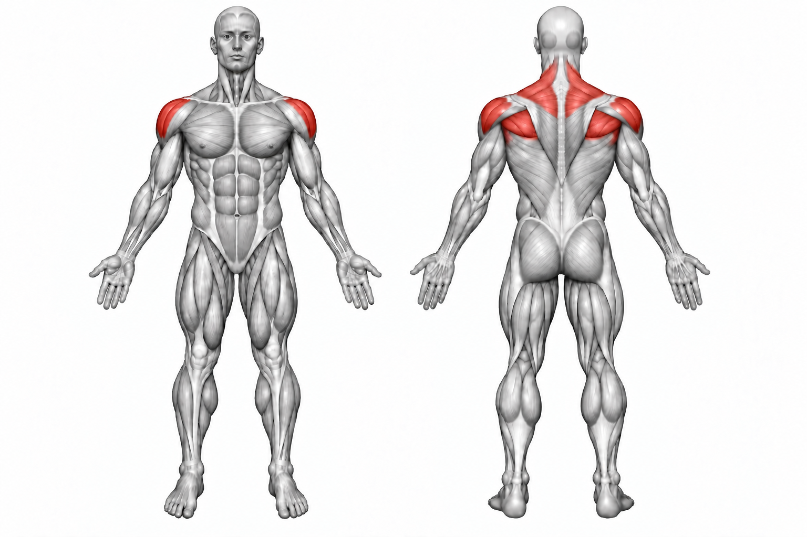
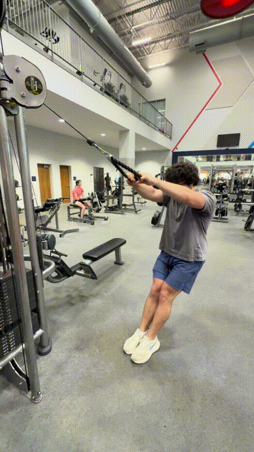

Face Pull


How to Perform
Set a cable pulley around upper-chest or face height and attach a rope. Grip the rope with both hands and step back until there is tension in the cable.
Pull the rope toward your face while driving your elbows outward and rotating your hands back. Squeeze your upper back and shoulders, then return the rope under control.
Primary Muscles
Posterior deltoid (Rear Delt)
Secondary Muscles
Infraspinatus (Rotator Cuff), teres minor (Rotator Cuff), and trapezius (Traps)